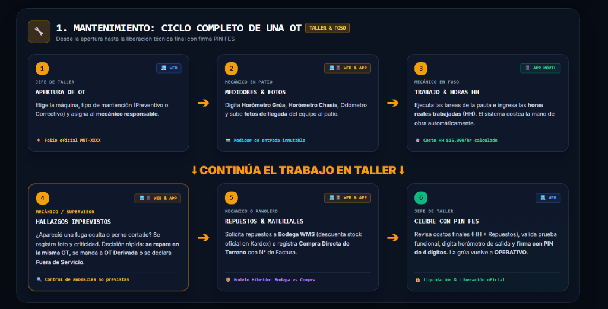
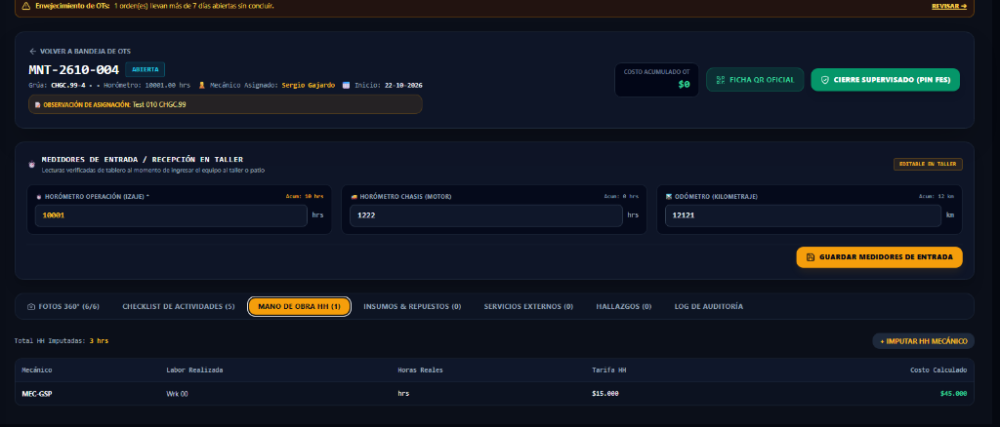
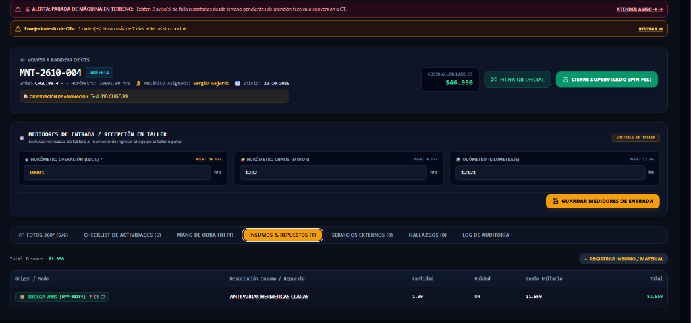
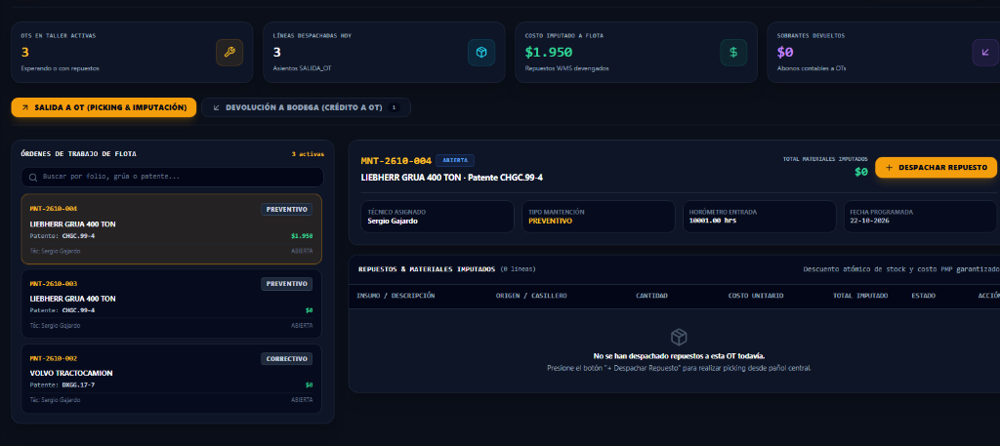
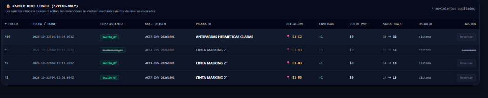

Flujo Operacional Integrado:
Taller de Mantenimiento & Pañol Central
Este documento interactivo presenta paso a paso el circuito operativo oficial validado en vivo en la plataforma de Producción. Detalla exactamente qué pantalla utiliza cada responsable, cómo interactúan Taller y Pañol sin fricción y cómo se garantiza el control estricto de costos, horas hombre y stock.
Cadena de Valor: Las 6 Fases del Circuito Operativo
Apertura OT & Horómetros
Ingreso de horómetro chasis/grúa y odómetro inmutables.
Imputación HH Técnicos
Asigna horas a los 9 mecánicos de foso ($15.000/hr).
Petición de Repuesto
Consulta con stock en verde y solicita con folio de OT.
Despacho & Rebaja WMS
Picking en casillero, rebaja stock físico y crea Kardex.
Chequeo PWA Móvil
Visualización de alto contraste en patio/foso.
Cierre Técnico con PIN
Horómetro final, balance total y firma FES (PIN 1234).
Matriz de Responsabilidad por Rol en Terreno
| Actividad Operacional | Leonel (Mant. Taller) | Alan (Par Mantención) | Eduardo Aguirre (Adquisiciones/Pañol) | Resultado en el Sistema |
|---|---|---|---|---|
| 1. Apertura OT e ingreso horómetros iniciales | EJECUTA (Web/App) | Valida pauta/avería | — | Folio MNT activo; grúa pasa a Mantenimiento |
| 2. Asignación de HH a 9 mecánicos de patio | EJECUTA (Web/App) | Audita eficiencia | — | Costo HH imputado ($15k/h por técnico) |
| 3. Petición de repuesto en pañol con N° OT | SOLICITA (Web/App) | Supervisa componente | DESPACHA EN RACK | Rebaja atómica Kardex; stock Temuco baja |
| 4. Devolución de sobrantes o piezas no usadas | ENTREGA A PAÑOL | Controla mermas | REINGRESA A CASILLERO | Crédito en dinero a OT; stock sube en Kardex |
| 5. Cierre técnico con PIN FES (1234) | FIRMA CON PIN | LIBERA FLOTA | — | Grúa queda 100% OPERATIVA para faena |
Apertura de la OT & Captura Inmutable de Horómetros
1. En la Web o PWA Móvil, pulsa [ + Nueva OT ].
2. Selecciona la grúa (ej. Liebherr LTM-1400 `CHGC.99-4`).
3. Registra obligatoriamente los medidores de llegada: Horómetro Chasis, Horómetro Grúa y Odómetro.
4. Opcional: Adjunta fotos del odómetro o del estado físico de recepción.
Verifica si la OT corresponde al plan preventivo o a una falla no programada reportada en faena, asegurando que se establezca la prioridad correcta en patio.
Al ver aparecer la OT en el sistema, anticipa el alistamiento de filtros y lubricantes según el tipo de servicio (Preventivo 250h / 500h).

Imputación de Mano de Obra (HH) a la Nómina de Mecánicos
1. En la pestaña Mano de Obra de la OT, selecciona al técnico que ejecutó el trabajo.
2. Ingresa la cantidad de horas (ej. 3 Horas) y detalle técnico.
3. El sistema calcula en vivo: 3 hrs × $15.000 = $45.000 CLP.
4. Reactividad garantizada: El costo acumulado en la cabecera de la OT se actualiza de inmediato.
Controla que las horas imputadas no excedan el estándar presupuestado de la intervención y revisa la carga de trabajo de la cuadrilla.
| Mecánico Asignado | Cargo en BD | Labor / Tarea Realizada | Horas | Tarifa HH | Costo Calculado |
|---|---|---|---|---|---|
| Juan José Espinoza Saavedra | Técnico Taller Mantenimiento | Inspección de sistema hidráulico, torque y pauta de filtros | 3.0 hrs | $15.000 | $45.000 CLP |
Búsqueda de Repuestos con Stock en Pañol Temuco
1. En la pestaña Insumos & Repuestos, pulsa [ + Agregar Insumo ].
2. Elige el modo: [ 📦 Desde Bodega WMS ] o [ 📝 Compra Local / Terreno ].
3. Si es de Bodega, busca por nombre o SKU. El sistema muestra claramente en verde si hay stock disponible o en rojo si hay quiebre.
4. Digita la cantidad en unidades limpias (ej. 1 UN, sin decimales).
Mantiene la bodega física ordenada por casilleros de rack (E1 a E9) con etiquetas QR para que el stock mostrado en pantalla sea exactamente el que está en el estante.


Pañol Central: Picking y Despacho Atómico a la OT
1. El mecánico llega a la ventanilla con el N° de OT (ej. OT-8 / MNT-2610-004).
2. Eduardo Aguirre abre en su computador o tablet: Inventario ➔ Despacho a OT.
3. Selecciona la OT en la columna lateral izquierda.
4. Ve el repuesto pedido, camina al casillero de rack indicado (ej. E1-A2) y retira la pieza física.
5. Pulsa el botón verde [ Despachar ].
- ✓ Stock en Bodega Temuco baja de 33 UN a 32 UN.
- ✓ Se emite asiento inmutable en Kardex: SALIDA_OT.
-
✓ El costo PMP ($1.950) se suma a la grúa
CHGC.99-4. - ✓ En la OT pasa a estado ENTREGADO.

Kardex Ledger en Vivo & Devolución de Sobrantes
1. Leonel regresa los insumos que no se usaron al pañol.
2. Eduardo Aguirre abre la pestaña Devolución de Sobrantes.
3. Selecciona el casillero de reingreso y pulsa [ Devolver a Bodega ].
4. Efecto financiero: La OT recibe un crédito monetario que rebaja su costo y el Kardex registra DEVOLUCION_OT.

PWA Móvil de Taller en Modo Claro: Vista en Terreno
Leonel revisa en su teléfono la nómina de insumos entregados al instante:
• Badge Esmeralda [📦 BODEGA WMS: EPP-00184]: Entregado por Eduardo Aguirre desde pañol.
• Casillero Físico 📍 E1-A2: Trazabilidad del estante exacto.
• Unidades Limpias: Formato humano sin decimales superfluos (1.00 UN).
Visualización con fondo blanco puro y tipografía de alto contraste text-slate-900 font-extrabold. Diseñada para operar sin reflejos bajo la luz solar directa en el patio de grúas o dentro del foso de taller.
Alan puede escanear el código QR adherido a la grúa y auditar de inmediato qué repuestos tiene cargados la máquina y cuántas horas hombre lleva acumuladas.
Cierre Técnico con Firma FES (PIN 1234) & Alta Operativa
1. En la Web o PWA, pulsa el botón [ 🔒 CERRAR OT TÉCNICA ].
2. Ingresa el Horómetro Final de salida (el sistema valida que sea ≥ al de entrada).
3. Revisa el balance total consolidado.
4. Ingresa su PIN Digital FES de 4 dígitos (PIN de prueba: 1234).
5. Pulsa Confirmar Firma.
Sello Electrónico de Liberación Técnica
Gobernanza Operativa & Compromisos de Cada Actor
Leonel Vergara
- 1. Usa la cuenta oficial mantencion@arriendosanpablo.cl (único usuario activo en taller).
- 2. Abre OTs e ingresa horómetros reales de entrada.
- 3. Asigna e imputa horas hombre a los 9 mecánicos de patio desde el selector.
- 4. Pide repuestos con N° de OT en pañol y cierra técnicamente con su PIN FES.
Alan Sarpi
- 1. Monitorea la disponibilidad de la flota en la consola central.
- 2. Coordina ingresos preventivos según los ciclos de horómetros acumulados.
- 3. Valida la criticidad de averías no programadas y tiempos de detención (downtime).
- 4. Coordina con Operaciones y Gerencia la liberación de grúas a faenas de alto tonelaje.
Eduardo Aguirre
- 1. Recepciona compras contra Orden de Compra (OC), cuenta piezas físicas y rotula casillero con QR.
- 2. Despacha repuestos exclusivamente con N° de OT desde la pantalla Despacho WMS.
- 3. Asegura la rebaja atómica de stock en Pañol Temuco (CERO diferencias físicas).
- 4. Registra devoluciones de sobrantes reincorporando stock y acreditando saldo a la OT.
"El circuito operacional de Taller y Pañol Temuco se encuentra 100% operativo en Producción. Los mecánicos son imputables, los repuestos rebajan stock en tiempo real, el Kardex es auditable y la grúa Liebherr 400 Ton quedó formalmente cerrada y liberada a operaciones."